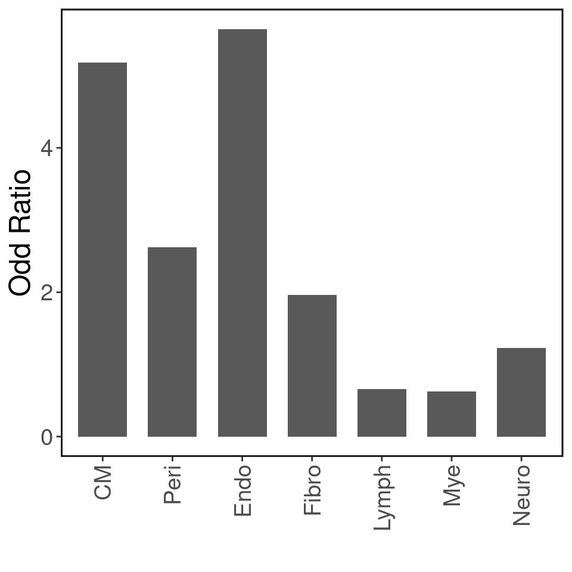
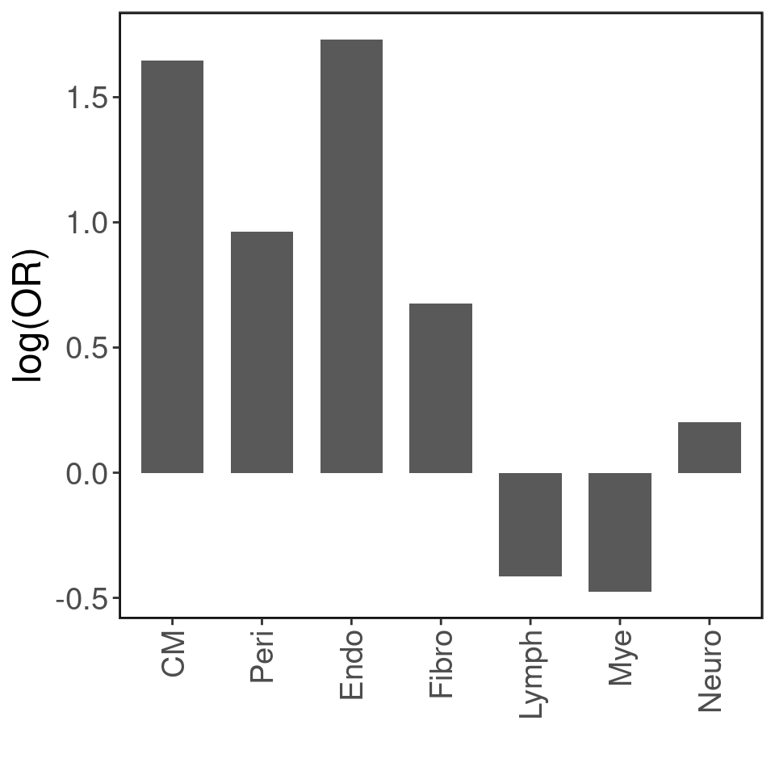
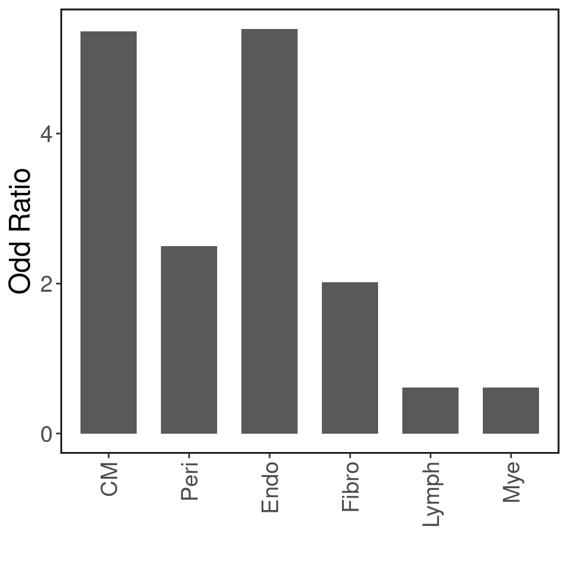
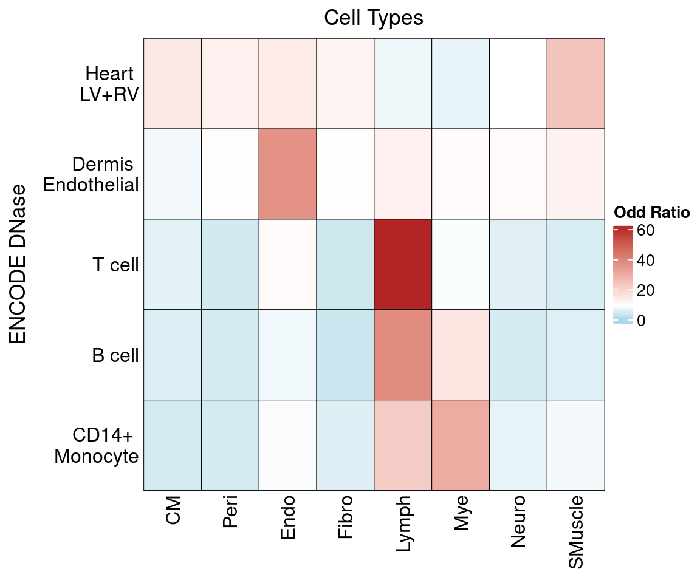

Last updated: 2022-09-15
Checks: 6 1
Knit directory: heart_atlas/
This reproducible R Markdown analysis was created with workflowr (version 1.7.0). The Checks tab describes the reproducibility checks that were applied when the results were created. The Past versions tab lists the development history.
The R Markdown is untracked by Git. To know which version of the R
Markdown file created these results, you’ll want to first commit it to
the Git repo. If you’re still working on the analysis, you can ignore
this warning. When you’re finished, you can run
wflow_publish to commit the R Markdown file and build the
HTML.
Great job! The global environment was empty. Objects defined in the global environment can affect the analysis in your R Markdown file in unknown ways. For reproduciblity it’s best to always run the code in an empty environment.
The command set.seed(20220722) was run prior to running
the code in the R Markdown file. Setting a seed ensures that any results
that rely on randomness, e.g. subsampling or permutations, are
reproducible.
Great job! Recording the operating system, R version, and package versions is critical for reproducibility.
Nice! There were no cached chunks for this analysis, so you can be confident that you successfully produced the results during this run.
Great job! Using relative paths to the files within your workflowr project makes it easier to run your code on other machines.
Great! You are using Git for version control. Tracking code development and connecting the code version to the results is critical for reproducibility.
The results in this page were generated with repository version 78a0f42. See the Past versions tab to see a history of the changes made to the R Markdown and HTML files.
Note that you need to be careful to ensure that all relevant files for
the analysis have been committed to Git prior to generating the results
(you can use wflow_publish or
wflow_git_commit). workflowr only checks the R Markdown
file, but you know if there are other scripts or data files that it
depends on. Below is the status of the Git repository when the results
were generated:
Ignored files:
Ignored: .Rhistory
Untracked files:
Untracked: analysis/DHS_bulk_peak.Rmd
Unstaged changes:
Modified: analysis/index.Rmd
Note that any generated files, e.g. HTML, png, CSS, etc., are not included in this status report because it is ok for generated content to have uncommitted changes.
There are no past versions. Publish this analysis with
wflow_publish() to start tracking its development.
We will try to address the 3rd comments from the 3rd reviewer here:
Given that the numbers of cell type-specific peaks across different cell types are not the same, it does not appear to be valid to just show the proportions of overlap with bulk level data (Fig. 3d). The odd ratios are useful to correct differences in peak numbers. However, it would be helpful to show how many informative peaks are exclusively identified by single-cell data.
We computed odd ratios according to:
\[ OR = \frac{\frac{P(OCR_{2}|OCR_{1})}{1-P(OCR_{2}|OCR_{1})}}{\frac{P(OCR_{2}|\overline{OCR_{1}})}{1-P(OCR_{2}|\overline{OCR_{1}})}} \] where \(OCR_{1}\) is the bulk peaks from DHS, H3K27ac regions and \(OCR_{2}\) are peaks for each cell type specific OCR peaks. We permuted \(OCR_{1}\) among whole genome (hg38,\(OCR_{1}\) themselves were excluded) and used these regions as \(\overline{OCR_{1}}\) .
The permutation were performed using bedtools under two settings: 1) permuted 10 times the \(OCR_{1}\) 2) permuted same size of \(OCR_{1}\).
The H3K27ac regions covers 1/16 of the whole genome, bedtools cannot handle permutation for the data 10 times of it. So the permutation for H3K27ac region was just performed under the second setting.
For DHS peaks, the OR results were not differ a lot under different settings.


sessionInfo()R version 4.2.0 (2022-04-22)
Platform: x86_64-pc-linux-gnu (64-bit)
Running under: CentOS Linux 7 (Core)
Matrix products: default
BLAS/LAPACK: /software/openblas-0.3.13-el7-x86_64/lib/libopenblas_haswellp-r0.3.13.so
locale:
[1] C
attached base packages:
[1] grid stats4 stats graphics grDevices utils datasets
[8] methods base
other attached packages:
[1] genomation_1.28.0 ComplexHeatmap_2.12.0 GenomicRanges_1.48.0
[4] GenomeInfoDb_1.32.2 IRanges_2.30.0 S4Vectors_0.34.0
[7] BiocGenerics_0.42.0 ggplot2_3.3.5
loaded via a namespace (and not attached):
[1] bitops_1.0-7 matrixStats_0.62.0
[3] fs_1.5.2 bit64_4.0.5
[5] doParallel_1.0.17 RColorBrewer_1.1-3
[7] rprojroot_2.0.3 tools_4.2.0
[9] bslib_0.3.1 DT_0.22
[11] utf8_1.2.2 R6_2.5.1
[13] KernSmooth_2.23-20 DBI_1.1.2
[15] colorspace_2.0-3 seqPattern_1.28.0
[17] GetoptLong_1.0.5 withr_2.5.0
[19] tidyselect_1.1.2 bit_4.0.4
[21] compiler_4.2.0 git2r_0.30.1
[23] cli_3.3.0 Biobase_2.56.0
[25] DelayedArray_0.22.0 labeling_0.4.2
[27] rtracklayer_1.56.0 sass_0.4.1
[29] scales_1.2.0 readr_2.1.2
[31] stringr_1.4.0 digest_0.6.29
[33] Rsamtools_2.12.0 rmarkdown_2.14
[35] XVector_0.36.0 pkgconfig_2.0.3
[37] htmltools_0.5.2 plotrix_3.8-2
[39] MatrixGenerics_1.8.0 highr_0.9
[41] fastmap_1.1.0 BSgenome_1.64.0
[43] htmlwidgets_1.5.4 rlang_1.0.5
[45] GlobalOptions_0.1.2 rstudioapi_0.13
[47] impute_1.70.0 farver_2.1.0
[49] shape_1.4.6 jquerylib_0.1.4
[51] BiocIO_1.6.0 generics_0.1.2
[53] jsonlite_1.8.0 crosstalk_1.2.0
[55] vroom_1.5.7 BiocParallel_1.30.3
[57] dplyr_1.0.9 RCurl_1.98-1.7
[59] magrittr_2.0.3 GenomeInfoDbData_1.2.8
[61] Matrix_1.4-1 Rcpp_1.0.8.3
[63] munsell_0.5.0 fansi_1.0.3
[65] lifecycle_1.0.1 stringi_1.7.6
[67] yaml_2.3.5 SummarizedExperiment_1.26.1
[69] zlibbioc_1.42.0 plyr_1.8.7
[71] parallel_4.2.0 promises_1.2.0.1
[73] crayon_1.5.1 lattice_0.20-45
[75] Biostrings_2.64.0 hms_1.1.1
[77] circlize_0.4.15 knitr_1.39
[79] pillar_1.7.0 rjson_0.2.21
[81] reshape2_1.4.4 codetools_0.2-18
[83] XML_3.99-0.9 glue_1.6.2
[85] evaluate_0.15 data.table_1.14.2
[87] tzdb_0.3.0 png_0.1-7
[89] vctrs_0.4.1 httpuv_1.6.5
[91] foreach_1.5.2 gtable_0.3.0
[93] purrr_0.3.4 clue_0.3-61
[95] assertthat_0.2.1 xfun_0.30
[97] gridBase_0.4-7 restfulr_0.0.14
[99] later_1.3.0 tibble_3.1.7
[101] iterators_1.0.14 GenomicAlignments_1.32.0
[103] workflowr_1.7.0 cluster_2.1.3
[105] ellipsis_0.3.2